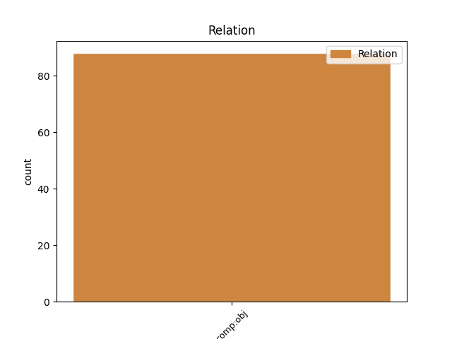
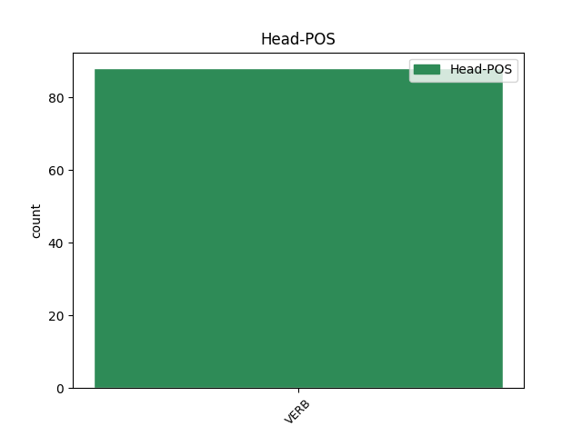
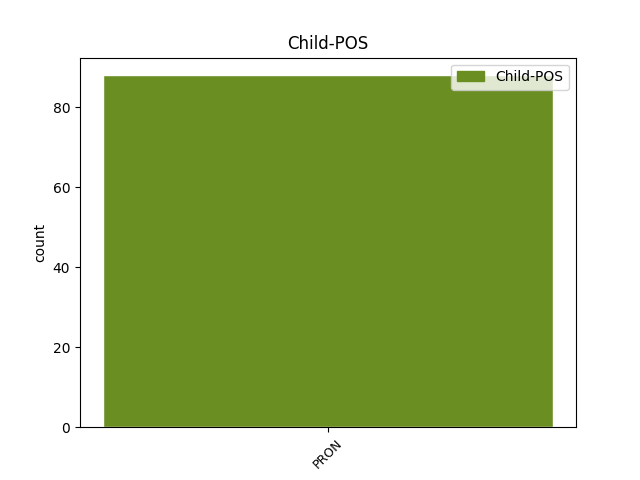

Distribution of features within this leaf



Agreement Rules sorted by frequency.
- When the dependent token is the direct object complements(comp:obj) of the head token,
1 14 _ _ _ _ 0 _ _ _
2 . _ _ _ _ 0 _ _ _
3 Komiteto _ _ _ _ 0 _ _ _
4 posėdžiams _ _ _ _ 0 _ _ _
5 pirmininkauja _ _ _ _ 0 _ _ _
6 Komiteto _ _ _ _ 0 _ _ _
7 pirmininkas _ _ _ _ 0 _ _ _
8 , _ _ _ _ 0 _ _ _
9 o _ _ _ _ 0 _ _ _
10 jei _ _ _ _ 0 _ _ _
11 jo jis PRON įv.vyr.vns.K. Case=Gen|Definite=Ind|Gender=Masc|Number=Sing|Person=3|PronType=Prs 12 comp:obj _ _
12 nėra nebūti VERB vksm.asm.neig.tiesiog.es.vns.3. Mood=Ind|Number=Sing|Person=3|Polarity=Neg|Tense=Pres|VerbForm=Fin 0 _ _ _
13 - _ _ _ _ 0 _ _ _
14 Komiteto _ _ _ _ 0 _ _ _
15 pirmininko _ _ _ _ 0 _ _ _
16 pavaduotojas _ _ _ _ 0 _ _ _
17 . _ _ _ _ 0 _ _ _
Disagree Examples:
1 Manau _ _ _ _ 0 _ _ _
2 , _ _ _ _ 0 _ _ _
3 kad _ _ _ _ 0 _ _ _
4 sunkindami _ _ _ _ 0 _ _ _
5 žmonėms _ _ _ _ 0 _ _ _
6 gyvenimus _ _ _ _ 0 _ _ _
7 mes _ _ _ _ 0 _ _ _
8 jų jis PRON įv.vyr.dgs.K. Case=Gen|Definite=Ind|Gender=Masc|Number=Plur|Person=3|PronType=Prs 9 comp:obj _ _
9 neišgelbėsime neišgelbėti VERB vksm.asm.neig.tiesiog.būs.dgs.1. Mood=Ind|Number=Plur|Person=1|Polarity=Neg|Tense=Fut|VerbForm=Fin 0 _ _ _
10 . _ _ _ _ 0 _ _ _
1 Reikia _ _ _ _ 0 _ _ _
2 daugiau _ _ _ _ 0 _ _ _
3 kūrybiškumo _ _ _ _ 0 _ _ _
4 , _ _ _ _ 0 _ _ _
5 kad _ _ _ _ 0 _ _ _
6 žmonėms _ _ _ _ 0 _ _ _
7 galima _ _ _ _ 0 _ _ _
8 būtų _ _ _ _ 0 _ _ _
9 pasakyti _ _ _ _ 0 _ _ _
10 , _ _ _ _ 0 _ _ _
11 kad _ _ _ _ 0 _ _ _
12 tos _ _ _ _ 0 _ _ _
13 ar _ _ _ _ 0 _ _ _
14 anos _ _ _ _ 0 _ _ _
15 programos _ _ _ _ 0 _ _ _
16 atneš _ _ _ _ 0 _ _ _
17 papildomų _ _ _ _ 0 _ _ _
18 pajamų _ _ _ _ 0 _ _ _
19 , _ _ _ _ 0 _ _ _
20 o _ _ _ _ 0 _ _ _
21 ne _ _ _ _ 0 _ _ _
22 kalbėti _ _ _ _ 0 _ _ _
23 tik _ _ _ _ 0 _ _ _
24 apie _ _ _ _ 0 _ _ _
25 tai _ _ _ _ 0 _ _ _
26 , _ _ _ _ 0 _ _ _
27 kokias _ _ _ _ 0 _ _ _
28 turime _ _ _ _ 0 _ _ _
29 pajamas _ _ _ _ 0 _ _ _
30 , _ _ _ _ 0 _ _ _
31 jas jis PRON įv.mot.dgs.G. Case=Acc|Definite=Ind|Gender=Fem|Number=Plur|Person=3|PronType=Prs 32 comp:obj _ _
32 sumažiname sumažinti VERB vksm.asm.tiesiog.es.dgs.1. Mood=Ind|Number=Plur|Person=1|Polarity=Pos|Tense=Pres|VerbForm=Fin 0 _ _ _
33 , _ _ _ _ 0 _ _ _
34 nes _ _ _ _ 0 _ _ _
35 galime _ _ _ _ 0 _ _ _
36 tik _ _ _ _ 0 _ _ _
37 finansuoti _ _ _ _ 0 _ _ _
38 . _ _ _ _ 0 _ _ _
1 Girdžiu _ _ _ _ 0 _ _ _
2 šalia _ _ _ _ 0 _ _ _
3 miegančio _ _ _ _ 0 _ _ _
4 žmogaus _ _ _ _ 0 _ _ _
5 atodūsius _ _ _ _ 0 _ _ _
6 , _ _ _ _ 0 _ _ _
7 girdžiu _ _ _ _ 0 _ _ _
8 , _ _ _ _ 0 _ _ _
9 kaip _ _ _ _ 0 _ _ _
10 iš _ _ _ _ 0 _ _ _
11 paežerės _ _ _ _ 0 _ _ _
12 , _ _ _ _ 0 _ _ _
13 o _ _ _ _ 0 _ _ _
14 man aš PRON įv.vns.N. Case=Dat|Definite=Ind|Number=Sing|Person=1|PronType=Prs 15 comp:obj _ _
15 atrodo atrodyti VERB vksm.asm.tiesiog.es.vns.3. Mood=Ind|Number=Sing|Person=3|Polarity=Pos|Tense=Pres|VerbForm=Fin 0 _ _ _
16 , _ _ _ _ 0 _ _ _
17 kad _ _ _ _ 0 _ _ _
18 kažkur _ _ _ _ 0 _ _ _
19 iš _ _ _ _ 0 _ _ _
20 mano _ _ _ _ 0 _ _ _
21 gelmių _ _ _ _ 0 _ _ _
22 dugno _ _ _ _ 0 _ _ _
23 , _ _ _ _ 0 _ _ _
24 atsklinda _ _ _ _ 0 _ _ _
25 kaimynų _ _ _ _ 0 _ _ _
26 kalės _ _ _ _ 0 _ _ _
27 žemas _ _ _ _ 0 _ _ _
28 duslus _ _ _ _ 0 _ _ _
29 amtelėjimas _ _ _ _ 0 _ _ _
30 , _ _ _ _ 0 _ _ _
31 – _ _ _ _ 0 _ _ _
32 ji _ _ _ _ 0 _ _ _
33 laimėjo _ _ _ _ 0 _ _ _
34 gražiausios _ _ _ _ 0 _ _ _
35 Lietuvos _ _ _ _ 0 _ _ _
36 niufaunlendės _ _ _ _ 0 _ _ _
37 titulą _ _ _ _ 0 _ _ _
38 , _ _ _ _ 0 _ _ _
39 bet _ _ _ _ 0 _ _ _
40 niekada _ _ _ _ 0 _ _ _
41 neatsives _ _ _ _ 0 _ _ _
42 tokių _ _ _ _ 0 _ _ _
43 pat _ _ _ _ 0 _ _ _
44 gražių _ _ _ _ 0 _ _ _
45 šunyčių _ _ _ _ 0 _ _ _
46 , _ _ _ _ 0 _ _ _
47 nes _ _ _ _ 0 _ _ _
48 po _ _ _ _ 0 _ _ _
49 nuodugnių _ _ _ _ 0 _ _ _
50 tyrimų _ _ _ _ 0 _ _ _
51 išaiškėjo _ _ _ _ 0 _ _ _
52 , _ _ _ _ 0 _ _ _
53 kad _ _ _ _ 0 _ _ _
54 dubens _ _ _ _ 0 _ _ _
55 kaulai _ _ _ _ 0 _ _ _
56 nepakankamai _ _ _ _ 0 _ _ _
57 patvarūs _ _ _ _ 0 _ _ _
58 , _ _ _ _ 0 _ _ _
59 – _ _ _ _ 0 _ _ _
60 gražuolė _ _ _ _ 0 _ _ _
61 brokuota _ _ _ _ 0 _ _ _
62 ... _ _ _ _ 0 _ _ _
1 – _ _ _ _ 0 _ _ _
2 Ponia _ _ _ _ 0 _ _ _
3 , _ _ _ _ 0 _ _ _
4 bene _ _ _ _ 0 _ _ _
5 jumyse _ _ _ _ 0 _ _ _
6 granata _ _ _ _ 0 _ _ _
7 sprogo _ _ _ _ 0 _ _ _
8 ? _ _ _ _ 0 _ _ _
9 – _ _ _ _ 0 _ _ _
10 iškviestas _ _ _ _ 0 _ _ _
11 chirurgas _ _ _ _ 0 _ _ _
12 keiksis _ _ _ _ 0 _ _ _
13 patyliukais _ _ _ _ 0 _ _ _
14 , _ _ _ _ 0 _ _ _
15 bet _ _ _ _ 0 _ _ _
16 tu _ _ _ _ 0 _ _ _
17 vis _ _ _ _ 0 _ _ _
18 tiek _ _ _ _ 0 _ _ _
19 girdėsi _ _ _ _ 0 _ _ _
20 , _ _ _ _ 0 _ _ _
21 keiksis _ _ _ _ 0 _ _ _
22 , _ _ _ _ 0 _ _ _
23 bet _ _ _ _ 0 _ _ _
24 nekaltins _ _ _ _ 0 _ _ _
25 netikusių _ _ _ _ 0 _ _ _
26 kolegų _ _ _ _ 0 _ _ _
27 , _ _ _ _ 0 _ _ _
28 kurie _ _ _ _ 0 _ _ _
29 gimdyvę _ _ _ _ 0 _ _ _
30 paliko _ _ _ _ 0 _ _ _
31 likimo _ _ _ _ 0 _ _ _
32 valiai _ _ _ _ 0 _ _ _
33 , _ _ _ _ 0 _ _ _
34 o _ _ _ _ 0 _ _ _
35 ši _ _ _ _ 0 _ _ _
36 ėmė _ _ _ _ 0 _ _ _
37 ir _ _ _ _ 0 _ _ _
38 persistengė _ _ _ _ 0 _ _ _
39 , _ _ _ _ 0 _ _ _
40 nes _ _ _ _ 0 _ _ _
41 vaikais _ _ _ _ 0 _ _ _
42 nešaudoma _ _ _ _ 0 _ _ _
43 , _ _ _ _ 0 _ _ _
44 ponia _ _ _ _ 0 _ _ _
45 , _ _ _ _ 0 _ _ _
46 dabar _ _ _ _ 0 _ _ _
47 gulėkit _ _ _ _ 0 _ _ _
48 ramiai _ _ _ _ 0 _ _ _
49 , _ _ _ _ 0 _ _ _
50 pakentėkit _ _ _ _ 0 _ _ _
51 , _ _ _ _ 0 _ _ _
52 pakentėkit _ _ _ _ 0 _ _ _
53 , _ _ _ _ 0 _ _ _
54 kaip _ _ _ _ 0 _ _ _
55 nors _ _ _ _ 0 _ _ _
56 jus tu PRON įv.dgs.G. Case=Acc|Definite=Ind|Number=Plur|Person=2|PronType=Prs 57 comp:obj _ _
57 sulopysiu sulopyti VERB vksm.asm.tiesiog.būs.vns.1. Mood=Ind|Number=Sing|Person=1|Polarity=Pos|Tense=Fut|VerbForm=Fin 0 _ _ _
58 ... _ _ _ _ 0 _ _ _
1 Esi _ _ _ _ 0 _ _ _
2 ir _ _ _ _ 0 _ _ _
3 nežinai _ _ _ _ 0 _ _ _
4 , _ _ _ _ 0 _ _ _
5 ar _ _ _ _ 0 _ _ _
6 tai _ _ _ _ 0 _ _ _
7 tave tu PRON įv.vns.G. Case=Acc|Definite=Ind|Number=Sing|Person=2|PronType=Prs 10 comp:obj _ _
8 kas _ _ _ _ 0 _ _ _
9 nors _ _ _ _ 0 _ _ _
10 sviedė sviesti VERB vksm.asm.tiesiog.būt-k.3. Aspect=Perf|Mood=Ind|Person=3|Polarity=Pos|Tense=Past|VerbForm=Fin 0 _ _ _
11 iš _ _ _ _ 0 _ _ _
12 aukštybių _ _ _ _ 0 _ _ _
13 ( _ _ _ _ 0 _ _ _
14 vis _ _ _ _ 0 _ _ _
15 dėlto _ _ _ _ 0 _ _ _
16 norėtųsi _ _ _ _ 0 _ _ _
17 , _ _ _ _ 0 _ _ _
18 kad _ _ _ _ 0 _ _ _
19 iš _ _ _ _ 0 _ _ _
20 aukštybių _ _ _ _ 0 _ _ _
21 , _ _ _ _ 0 _ _ _
22 o _ _ _ _ 0 _ _ _
23 ne _ _ _ _ 0 _ _ _
24 iš _ _ _ _ 0 _ _ _
25 tamsos _ _ _ _ 0 _ _ _
26 gelmių _ _ _ _ 0 _ _ _
27 ) _ _ _ _ 0 _ _ _
28 netyčia _ _ _ _ 0 _ _ _
29 , _ _ _ _ 0 _ _ _
30 o _ _ _ _ 0 _ _ _
31 gal _ _ _ _ 0 _ _ _
32 tyčia _ _ _ _ 0 _ _ _
33 , _ _ _ _ 0 _ _ _
34 suardydamas _ _ _ _ 0 _ _ _
35 visus _ _ _ _ 0 _ _ _
36 kosmoso _ _ _ _ 0 _ _ _
37 sluoksnius _ _ _ _ 0 _ _ _
38 , _ _ _ _ 0 _ _ _
39 ar _ _ _ _ 0 _ _ _
40 pats _ _ _ _ 0 _ _ _
41 Visagalis _ _ _ _ 0 _ _ _
42 , _ _ _ _ 0 _ _ _
43 užtaisęs _ _ _ _ 0 _ _ _
44 tavimi _ _ _ _ 0 _ _ _
45 savo _ _ _ _ 0 _ _ _
46 patrankėlę _ _ _ _ 0 _ _ _
47 , _ _ _ _ 0 _ _ _
48 pasismagino _ _ _ _ 0 _ _ _
49 ir _ _ _ _ 0 _ _ _
50 dabar _ _ _ _ 0 _ _ _
51 stebi _ _ _ _ 0 _ _ _
52 , _ _ _ _ 0 _ _ _
53 kaip _ _ _ _ 0 _ _ _
54 plūduriuoji _ _ _ _ 0 _ _ _
55 , _ _ _ _ 0 _ _ _
56 kaip _ _ _ _ 0 _ _ _
57 mėgini _ _ _ _ 0 _ _ _
58 susigaudyti _ _ _ _ 0 _ _ _
59 spiralinėje _ _ _ _ 0 _ _ _
60 Jo _ _ _ _ 0 _ _ _
61 galaktikos _ _ _ _ 0 _ _ _
62 sistemoje _ _ _ _ 0 _ _ _
63 . _ _ _ _ 0 _ _ _